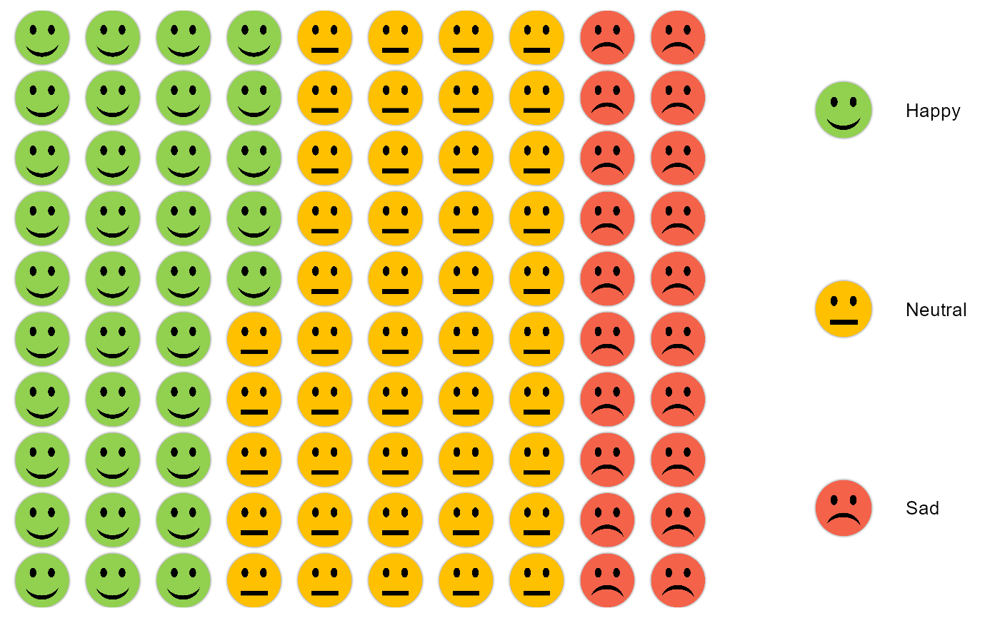
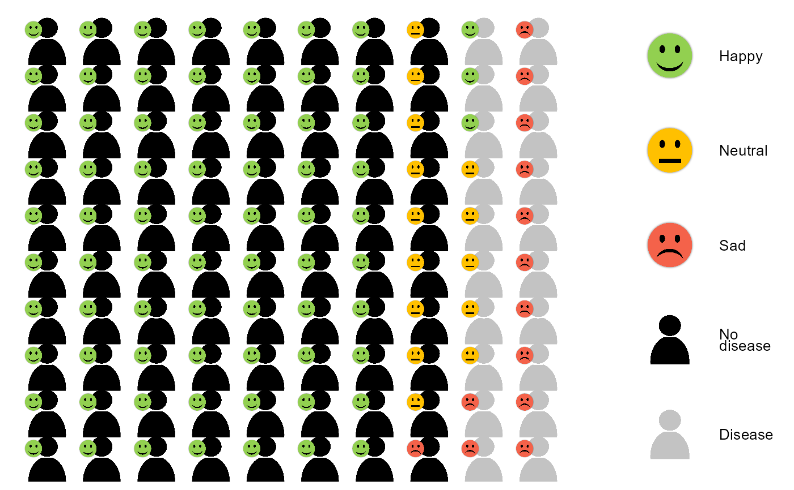

Waffle plot creator
waffles.RdWaffle plot creator
Usage
waffles(
icons,
legend,
percentages,
icon_lib = "RiskCom",
icons2,
legend2,
export,
icon_size = 0.1,
icon_size2 = 0.04,
legend_size = 0.5,
dir_size = "height",
offset_x = -0.25,
offset_y = -0.25
)Arguments
- icons
Vector of icon paths
- legend
Vector of icon descriptions corresponding to icons
- percentages
Vector of percentages of each icon (must sum to 100)
- icon_lib
Library to fetch the icons from (One of 'file', 'RiskCom', or 'internet')
- icons2
Optional additional level of icons
- legend2
Optional additional legends for the second icons
- export
(Optional) File path and name to export to
- icon_size
Size of the main icons
- icon_size2
Size of the additional icons
- legend_size
Size of the icon legends
- dir_size
Direction of the size ('height' or 'width')
- offset_x
Offset for the additional icons
- offset_y
Offset for the additional icons
Examples
# Single waffle plot
icons = c("happy",
"neutral",
"sad")
legend = c("Happy", "Neutral", "Sad")
percentages = c(35, 45, 20)
waffles(icons, legend, percentages)
#> Importing fonts may take a few minutes, depending on the number of fonts and the speed of the system.
#> Continue? [y/n]
#> Exiting.
#> Agency FB already registered with postscriptFont().
#> Algerian already registered with postscriptFont().
#> Arial already registered with postscriptFont().
#> Arial Black already registered with postscriptFont().
#> Arial Narrow already registered with postscriptFont().
#> Arial Rounded MT Bold already registered with postscriptFont().
#> Bahnschrift already registered with postscriptFont().
#> Baskerville Old Face already registered with postscriptFont().
#> Bauhaus 93 already registered with postscriptFont().
#> Bell MT already registered with postscriptFont().
#> Berlin Sans FB already registered with postscriptFont().
#> No regular (non-bold, non-italic) version of Berlin Sans FB Demi. Skipping setup for this font.
#> Bernard MT Condensed already registered with postscriptFont().
#> Blackadder ITC already registered with postscriptFont().
#> Bodoni MT already registered with postscriptFont().
#> Bodoni MT Black already registered with postscriptFont().
#> Bodoni MT Condensed already registered with postscriptFont().
#> Bodoni MT Poster Compressed already registered with postscriptFont().
#> Book Antiqua already registered with postscriptFont().
#> Bookman Old Style already registered with postscriptFont().
#> Bookshelf Symbol 7 already registered with postscriptFont().
#> Bradley Hand ITC already registered with postscriptFont().
#> Britannic Bold already registered with postscriptFont().
#> Broadway already registered with postscriptFont().
#> No regular (non-bold, non-italic) version of Brush Script MT. Skipping setup for this font.
#> Calibri already registered with postscriptFont().
#> Calibri Light already registered with postscriptFont().
#> Californian FB already registered with postscriptFont().
#> Calisto MT already registered with postscriptFont().
#> No regular (non-bold, non-italic) version of Cambria. Skipping setup for this font.
#> Candara already registered with postscriptFont().
#> Candara Light already registered with postscriptFont().
#> Cascadia Code already registered with postscriptFont().
#> Cascadia Mono already registered with postscriptFont().
#> Castellar already registered with postscriptFont().
#> Centaur already registered with postscriptFont().
#> Century already registered with postscriptFont().
#> Century Gothic already registered with postscriptFont().
#> Century Schoolbook already registered with postscriptFont().
#> Chiller already registered with postscriptFont().
#> Colonna MT already registered with postscriptFont().
#> Comic Sans MS already registered with postscriptFont().
#> Consolas already registered with postscriptFont().
#> Constantia already registered with postscriptFont().
#> Cooper Black already registered with postscriptFont().
#> Copperplate Gothic Bold already registered with postscriptFont().
#> Copperplate Gothic Light already registered with postscriptFont().
#> Corbel already registered with postscriptFont().
#> Corbel Light already registered with postscriptFont().
#> Courier New already registered with postscriptFont().
#> Curlz MT already registered with postscriptFont().
#> Dubai already registered with postscriptFont().
#> Dubai Light already registered with postscriptFont().
#> Dubai Medium already registered with postscriptFont().
#> Ebrima already registered with postscriptFont().
#> Edwardian Script ITC already registered with postscriptFont().
#> Elephant already registered with postscriptFont().
#> Engravers MT already registered with postscriptFont().
#> Eras Bold ITC already registered with postscriptFont().
#> Eras Demi ITC already registered with postscriptFont().
#> Eras Light ITC already registered with postscriptFont().
#> Eras Medium ITC already registered with postscriptFont().
#> Felix Titling already registered with postscriptFont().
#> Font Awesome 5 Brands Regular already registered with postscriptFont().
#> Font Awesome 5 Free Regular already registered with postscriptFont().
#> Font Awesome 5 Free Solid already registered with postscriptFont().
#> Footlight MT Light already registered with postscriptFont().
#> Forte already registered with postscriptFont().
#> Franklin Gothic Book already registered with postscriptFont().
#> Franklin Gothic Demi already registered with postscriptFont().
#> Franklin Gothic Demi Cond already registered with postscriptFont().
#> Franklin Gothic Heavy already registered with postscriptFont().
#> Franklin Gothic Medium already registered with postscriptFont().
#> Franklin Gothic Medium Cond already registered with postscriptFont().
#> Freestyle Script already registered with postscriptFont().
#> French Script MT already registered with postscriptFont().
#> Gabriola already registered with postscriptFont().
#> Gadugi already registered with postscriptFont().
#> Garamond already registered with postscriptFont().
#> Georgia already registered with postscriptFont().
#> Gigi already registered with postscriptFont().
#> Gill Sans MT already registered with postscriptFont().
#> Gill Sans MT Condensed already registered with postscriptFont().
#> Gill Sans MT Ext Condensed Bold already registered with postscriptFont().
#> Gill Sans Ultra Bold already registered with postscriptFont().
#> Gill Sans Ultra Bold Condensed already registered with postscriptFont().
#> Gloucester MT Extra Condensed already registered with postscriptFont().
#> Goudy Old Style already registered with postscriptFont().
#> Goudy Stout already registered with postscriptFont().
#> Haettenschweiler already registered with postscriptFont().
#> No regular (non-bold, non-italic) version of Harlow Solid Italic. Skipping setup for this font.
#> Harrington already registered with postscriptFont().
#> High Tower Text already registered with postscriptFont().
#> HoloLens MDL2 Assets already registered with postscriptFont().
#> Impact already registered with postscriptFont().
#> Imprint MT Shadow already registered with postscriptFont().
#> Informal Roman already registered with postscriptFont().
#> Ink Free already registered with postscriptFont().
#> Javanese Text already registered with postscriptFont().
#> Jokerman already registered with postscriptFont().
#> Juice ITC already registered with postscriptFont().
#> Kristen ITC already registered with postscriptFont().
#> Kunstler Script already registered with postscriptFont().
#> Leelawadee already registered with postscriptFont().
#> Leelawadee UI already registered with postscriptFont().
#> Leelawadee UI Semilight already registered with postscriptFont().
#> More than one version of regular/bold/italic found for Lucida Bright. Skipping setup for this font.
#> No regular (non-bold, non-italic) version of Lucida Calligraphy. Skipping setup for this font.
#> Lucida Console already registered with postscriptFont().
#> More than one version of regular/bold/italic found for Lucida Fax. Skipping setup for this font.
#> No regular (non-bold, non-italic) version of Lucida Handwriting. Skipping setup for this font.
#> More than one version of regular/bold/italic found for Lucida Sans. Skipping setup for this font.
#> Lucida Sans Typewriter already registered with postscriptFont().
#> Lucida Sans Unicode already registered with postscriptFont().
#> MS Outlook already registered with postscriptFont().
#> MS Reference Sans Serif already registered with postscriptFont().
#> MS Reference Specialty already registered with postscriptFont().
#> MT Extra already registered with postscriptFont().
#> MV Boli already registered with postscriptFont().
#> No regular (non-bold, non-italic) version of Magneto. Skipping setup for this font.
#> Maiandra GD already registered with postscriptFont().
#> Malgun Gothic already registered with postscriptFont().
#> Malgun Gothic Semilight already registered with postscriptFont().
#> Marlett already registered with postscriptFont().
#> Matura MT Script Capitals already registered with postscriptFont().
#> Microsoft Himalaya already registered with postscriptFont().
#> Microsoft New Tai Lue already registered with postscriptFont().
#> Microsoft PhagsPa already registered with postscriptFont().
#> Microsoft Sans Serif already registered with postscriptFont().
#> Microsoft Tai Le already registered with postscriptFont().
#> Microsoft Uighur already registered with postscriptFont().
#> Microsoft Yi Baiti already registered with postscriptFont().
#> Mistral already registered with postscriptFont().
#> Modern No. 20 already registered with postscriptFont().
#> Mongolian Baiti already registered with postscriptFont().
#> Monotype Corsiva already registered with postscriptFont().
#> Myanmar Text already registered with postscriptFont().
#> Niagara Engraved already registered with postscriptFont().
#> Niagara Solid already registered with postscriptFont().
#> Nirmala UI already registered with postscriptFont().
#> Nirmala UI Semilight already registered with postscriptFont().
#> OCR A Extended already registered with postscriptFont().
#> Old English Text MT already registered with postscriptFont().
#> Onyx already registered with postscriptFont().
#> Palace Script MT already registered with postscriptFont().
#> Palatino Linotype already registered with postscriptFont().
#> Papyrus already registered with postscriptFont().
#> Parchment already registered with postscriptFont().
#> Perpetua already registered with postscriptFont().
#> Perpetua Titling MT already registered with postscriptFont().
#> Playbill already registered with postscriptFont().
#> Poor Richard already registered with postscriptFont().
#> Pristina already registered with postscriptFont().
#> No regular (non-bold, non-italic) version of Rage Italic. Skipping setup for this font.
#> Ravie already registered with postscriptFont().
#> Rockwell already registered with postscriptFont().
#> Rockwell Condensed already registered with postscriptFont().
#> Rockwell Extra Bold already registered with postscriptFont().
#> Script MT Bold already registered with postscriptFont().
#> Segoe MDL2 Assets already registered with postscriptFont().
#> Segoe Print already registered with postscriptFont().
#> Segoe Script already registered with postscriptFont().
#> Segoe UI already registered with postscriptFont().
#> Segoe UI Black already registered with postscriptFont().
#> Segoe UI Emoji already registered with postscriptFont().
#> Segoe UI Historic already registered with postscriptFont().
#> Segoe UI Light already registered with postscriptFont().
#> Segoe UI Semibold already registered with postscriptFont().
#> Segoe UI Semilight already registered with postscriptFont().
#> Segoe UI Symbol already registered with postscriptFont().
#> Showcard Gothic already registered with postscriptFont().
#> SimSun-ExtB already registered with postscriptFont().
#> Snap ITC already registered with postscriptFont().
#> Stencil already registered with postscriptFont().
#> Sylfaen already registered with postscriptFont().
#> Symbol already registered with postscriptFont().
#> Tahoma already registered with postscriptFont().
#> Tempus Sans ITC already registered with postscriptFont().
#> Times New Roman already registered with postscriptFont().
#> Trebuchet MS already registered with postscriptFont().
#> Tw Cen MT already registered with postscriptFont().
#> Tw Cen MT Condensed already registered with postscriptFont().
#> Tw Cen MT Condensed Extra Bold already registered with postscriptFont().
#> Verdana already registered with postscriptFont().
#> Viner Hand ITC already registered with postscriptFont().
#> No regular (non-bold, non-italic) version of Vivaldi. Skipping setup for this font.
#> Vladimir Script already registered with postscriptFont().
#> Webdings already registered with postscriptFont().
#> Wide Latin already registered with postscriptFont().
#> Wingdings already registered with postscriptFont().
#> Wingdings 2 already registered with postscriptFont().
#> Wingdings 3 already registered with postscriptFont().

# Double waffle plot using icons from the internet
# Icons2 can be different but the same are used here
icons1 = c("person", "person_grey")
icons2 = c("happy", "neutral", "sad")
legend1 = c("No disease", "Disease")
legend2 = c("Happy", "Neutral", "Sad")
percentages = c(70,9,1, 3, 5, 12)
waffles(icons=icons1, legend=legend1, percentages,
icons2=icons2, legend2=legend2)
#> Importing fonts may take a few minutes, depending on the number of fonts and the speed of the system.
#> Continue? [y/n]
#> Exiting.
#> Agency FB already registered with postscriptFont().
#> Algerian already registered with postscriptFont().
#> Arial already registered with postscriptFont().
#> Arial Black already registered with postscriptFont().
#> Arial Narrow already registered with postscriptFont().
#> Arial Rounded MT Bold already registered with postscriptFont().
#> Bahnschrift already registered with postscriptFont().
#> Baskerville Old Face already registered with postscriptFont().
#> Bauhaus 93 already registered with postscriptFont().
#> Bell MT already registered with postscriptFont().
#> Berlin Sans FB already registered with postscriptFont().
#> No regular (non-bold, non-italic) version of Berlin Sans FB Demi. Skipping setup for this font.
#> Bernard MT Condensed already registered with postscriptFont().
#> Blackadder ITC already registered with postscriptFont().
#> Bodoni MT already registered with postscriptFont().
#> Bodoni MT Black already registered with postscriptFont().
#> Bodoni MT Condensed already registered with postscriptFont().
#> Bodoni MT Poster Compressed already registered with postscriptFont().
#> Book Antiqua already registered with postscriptFont().
#> Bookman Old Style already registered with postscriptFont().
#> Bookshelf Symbol 7 already registered with postscriptFont().
#> Bradley Hand ITC already registered with postscriptFont().
#> Britannic Bold already registered with postscriptFont().
#> Broadway already registered with postscriptFont().
#> No regular (non-bold, non-italic) version of Brush Script MT. Skipping setup for this font.
#> Calibri already registered with postscriptFont().
#> Calibri Light already registered with postscriptFont().
#> Californian FB already registered with postscriptFont().
#> Calisto MT already registered with postscriptFont().
#> No regular (non-bold, non-italic) version of Cambria. Skipping setup for this font.
#> Candara already registered with postscriptFont().
#> Candara Light already registered with postscriptFont().
#> Cascadia Code already registered with postscriptFont().
#> Cascadia Mono already registered with postscriptFont().
#> Castellar already registered with postscriptFont().
#> Centaur already registered with postscriptFont().
#> Century already registered with postscriptFont().
#> Century Gothic already registered with postscriptFont().
#> Century Schoolbook already registered with postscriptFont().
#> Chiller already registered with postscriptFont().
#> Colonna MT already registered with postscriptFont().
#> Comic Sans MS already registered with postscriptFont().
#> Consolas already registered with postscriptFont().
#> Constantia already registered with postscriptFont().
#> Cooper Black already registered with postscriptFont().
#> Copperplate Gothic Bold already registered with postscriptFont().
#> Copperplate Gothic Light already registered with postscriptFont().
#> Corbel already registered with postscriptFont().
#> Corbel Light already registered with postscriptFont().
#> Courier New already registered with postscriptFont().
#> Curlz MT already registered with postscriptFont().
#> Dubai already registered with postscriptFont().
#> Dubai Light already registered with postscriptFont().
#> Dubai Medium already registered with postscriptFont().
#> Ebrima already registered with postscriptFont().
#> Edwardian Script ITC already registered with postscriptFont().
#> Elephant already registered with postscriptFont().
#> Engravers MT already registered with postscriptFont().
#> Eras Bold ITC already registered with postscriptFont().
#> Eras Demi ITC already registered with postscriptFont().
#> Eras Light ITC already registered with postscriptFont().
#> Eras Medium ITC already registered with postscriptFont().
#> Felix Titling already registered with postscriptFont().
#> Font Awesome 5 Brands Regular already registered with postscriptFont().
#> Font Awesome 5 Free Regular already registered with postscriptFont().
#> Font Awesome 5 Free Solid already registered with postscriptFont().
#> Footlight MT Light already registered with postscriptFont().
#> Forte already registered with postscriptFont().
#> Franklin Gothic Book already registered with postscriptFont().
#> Franklin Gothic Demi already registered with postscriptFont().
#> Franklin Gothic Demi Cond already registered with postscriptFont().
#> Franklin Gothic Heavy already registered with postscriptFont().
#> Franklin Gothic Medium already registered with postscriptFont().
#> Franklin Gothic Medium Cond already registered with postscriptFont().
#> Freestyle Script already registered with postscriptFont().
#> French Script MT already registered with postscriptFont().
#> Gabriola already registered with postscriptFont().
#> Gadugi already registered with postscriptFont().
#> Garamond already registered with postscriptFont().
#> Georgia already registered with postscriptFont().
#> Gigi already registered with postscriptFont().
#> Gill Sans MT already registered with postscriptFont().
#> Gill Sans MT Condensed already registered with postscriptFont().
#> Gill Sans MT Ext Condensed Bold already registered with postscriptFont().
#> Gill Sans Ultra Bold already registered with postscriptFont().
#> Gill Sans Ultra Bold Condensed already registered with postscriptFont().
#> Gloucester MT Extra Condensed already registered with postscriptFont().
#> Goudy Old Style already registered with postscriptFont().
#> Goudy Stout already registered with postscriptFont().
#> Haettenschweiler already registered with postscriptFont().
#> No regular (non-bold, non-italic) version of Harlow Solid Italic. Skipping setup for this font.
#> Harrington already registered with postscriptFont().
#> High Tower Text already registered with postscriptFont().
#> HoloLens MDL2 Assets already registered with postscriptFont().
#> Impact already registered with postscriptFont().
#> Imprint MT Shadow already registered with postscriptFont().
#> Informal Roman already registered with postscriptFont().
#> Ink Free already registered with postscriptFont().
#> Javanese Text already registered with postscriptFont().
#> Jokerman already registered with postscriptFont().
#> Juice ITC already registered with postscriptFont().
#> Kristen ITC already registered with postscriptFont().
#> Kunstler Script already registered with postscriptFont().
#> Leelawadee already registered with postscriptFont().
#> Leelawadee UI already registered with postscriptFont().
#> Leelawadee UI Semilight already registered with postscriptFont().
#> More than one version of regular/bold/italic found for Lucida Bright. Skipping setup for this font.
#> No regular (non-bold, non-italic) version of Lucida Calligraphy. Skipping setup for this font.
#> Lucida Console already registered with postscriptFont().
#> More than one version of regular/bold/italic found for Lucida Fax. Skipping setup for this font.
#> No regular (non-bold, non-italic) version of Lucida Handwriting. Skipping setup for this font.
#> More than one version of regular/bold/italic found for Lucida Sans. Skipping setup for this font.
#> Lucida Sans Typewriter already registered with postscriptFont().
#> Lucida Sans Unicode already registered with postscriptFont().
#> MS Outlook already registered with postscriptFont().
#> MS Reference Sans Serif already registered with postscriptFont().
#> MS Reference Specialty already registered with postscriptFont().
#> MT Extra already registered with postscriptFont().
#> MV Boli already registered with postscriptFont().
#> No regular (non-bold, non-italic) version of Magneto. Skipping setup for this font.
#> Maiandra GD already registered with postscriptFont().
#> Malgun Gothic already registered with postscriptFont().
#> Malgun Gothic Semilight already registered with postscriptFont().
#> Marlett already registered with postscriptFont().
#> Matura MT Script Capitals already registered with postscriptFont().
#> Microsoft Himalaya already registered with postscriptFont().
#> Microsoft New Tai Lue already registered with postscriptFont().
#> Microsoft PhagsPa already registered with postscriptFont().
#> Microsoft Sans Serif already registered with postscriptFont().
#> Microsoft Tai Le already registered with postscriptFont().
#> Microsoft Uighur already registered with postscriptFont().
#> Microsoft Yi Baiti already registered with postscriptFont().
#> Mistral already registered with postscriptFont().
#> Modern No. 20 already registered with postscriptFont().
#> Mongolian Baiti already registered with postscriptFont().
#> Monotype Corsiva already registered with postscriptFont().
#> Myanmar Text already registered with postscriptFont().
#> Niagara Engraved already registered with postscriptFont().
#> Niagara Solid already registered with postscriptFont().
#> Nirmala UI already registered with postscriptFont().
#> Nirmala UI Semilight already registered with postscriptFont().
#> OCR A Extended already registered with postscriptFont().
#> Old English Text MT already registered with postscriptFont().
#> Onyx already registered with postscriptFont().
#> Palace Script MT already registered with postscriptFont().
#> Palatino Linotype already registered with postscriptFont().
#> Papyrus already registered with postscriptFont().
#> Parchment already registered with postscriptFont().
#> Perpetua already registered with postscriptFont().
#> Perpetua Titling MT already registered with postscriptFont().
#> Playbill already registered with postscriptFont().
#> Poor Richard already registered with postscriptFont().
#> Pristina already registered with postscriptFont().
#> No regular (non-bold, non-italic) version of Rage Italic. Skipping setup for this font.
#> Ravie already registered with postscriptFont().
#> Rockwell already registered with postscriptFont().
#> Rockwell Condensed already registered with postscriptFont().
#> Rockwell Extra Bold already registered with postscriptFont().
#> Script MT Bold already registered with postscriptFont().
#> Segoe MDL2 Assets already registered with postscriptFont().
#> Segoe Print already registered with postscriptFont().
#> Segoe Script already registered with postscriptFont().
#> Segoe UI already registered with postscriptFont().
#> Segoe UI Black already registered with postscriptFont().
#> Segoe UI Emoji already registered with postscriptFont().
#> Segoe UI Historic already registered with postscriptFont().
#> Segoe UI Light already registered with postscriptFont().
#> Segoe UI Semibold already registered with postscriptFont().
#> Segoe UI Semilight already registered with postscriptFont().
#> Segoe UI Symbol already registered with postscriptFont().
#> Showcard Gothic already registered with postscriptFont().
#> SimSun-ExtB already registered with postscriptFont().
#> Snap ITC already registered with postscriptFont().
#> Stencil already registered with postscriptFont().
#> Sylfaen already registered with postscriptFont().
#> Symbol already registered with postscriptFont().
#> Tahoma already registered with postscriptFont().
#> Tempus Sans ITC already registered with postscriptFont().
#> Times New Roman already registered with postscriptFont().
#> Trebuchet MS already registered with postscriptFont().
#> Tw Cen MT already registered with postscriptFont().
#> Tw Cen MT Condensed already registered with postscriptFont().
#> Tw Cen MT Condensed Extra Bold already registered with postscriptFont().
#> Verdana already registered with postscriptFont().
#> Viner Hand ITC already registered with postscriptFont().
#> No regular (non-bold, non-italic) version of Vivaldi. Skipping setup for this font.
#> Vladimir Script already registered with postscriptFont().
#> Webdings already registered with postscriptFont().
#> Wide Latin already registered with postscriptFont().
#> Wingdings already registered with postscriptFont().
#> Wingdings 2 already registered with postscriptFont().
#> Wingdings 3 already registered with postscriptFont().
#> Scale for y is already present.
#> Adding another scale for y, which will replace the existing scale.
